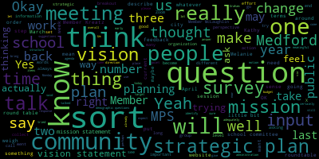
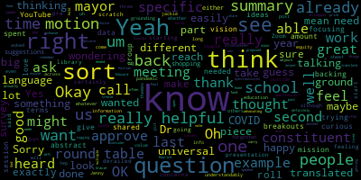
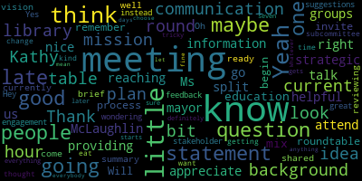
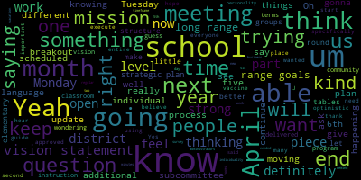

[Graham]: Hello. Hey, Kathy. Oh, OK. Can I? Kathy and Melanie, can you unmute now? Yes. OK. Yes. Hi. OK. Peter beat me to it. Or I don't know if I can unmute, because I was just the co-host.
[McLaughlin]: Sorry, I was over trying to get us on YouTube. Just give me one second.
[Graham]: OK.
[Kreatz]: All right, we should be good to go.
[Graham]: OK. Give me one second to pull up the agenda. Okay so please be advised on Tuesday March 2nd from 5 to 6 30 there will be a communications engagement and strategic planning subcommittee meeting held through remote participation via zoom pursuant to governor baker's march 12th 2020 order suspending certain provisions of the open meeting law and the governor's march 15th 2020 order imposing strict limitations on the number of people that may gather in one place This meeting of the Medford School Committee will be conducted via remote participation to the greatest extent possible. Specific information and the general guidelines for remote participation by members of the public and or parties with the right and or requirement to attend this meeting can be found on the City of Medford website at www.medfordma.org. For this meeting members of the public who wish to listen or watch the meeting may do so by accessing the meeting link contained herein. No in-person attendance of the members of the public will be permitted, but every effort will be made to ensure that the public can adequately access the proceedings in real time via technological means. In the event that we are unable to do so, despite best efforts, we will post a city on the City of Medford or Medford Community Media websites in audio or video, recording, transcript, or other comprehensive record of the proceedings as soon as possible after the meeting. The meeting can be viewed through Medford Community Media on Comcast Channel 15 and Verizon Channel 45 from 5 to 630. Since the meeting will be held remotely, participants can log in or call in by using the following link or call in number. So the Zoom meeting ID is 929674. 4, 6, 3, 7, 8. You can dial in by dialing 312-626-6799 and entering the meeting ID 929-674-46378. And our agenda today, our topics today are really to build a plan to collect community input for our strategic plan. So we will identify actions we will take to collect community input regarding the MPS strategic plan. So I will take attendance. Member Graham is here. Member Kreatz? And Member McLaughlin? Here. All right, three absent. Sorry, three present, none absent. So we talked about two things in our last meeting. One is some round tables specifically geared toward the strategic plan itself. So separate and apart from the listening sessions that are happening. And then we also talked about a survey for those who can't participate in the Zoom session. So I actually did take a crack at a draft of all of this and I'm gonna share my screen. Can you see my screen? Oh, not yet. How about now? Okay. Perfect. Okay. So, you know, what I did was just try to do some thinking around like what, you know, when we talk about a strategic plan and the kind of input we want from the community, how do we collect that input in a meaningful way? And I think one of the keys when you embark on strategic planning is that you sort of separate the like, The aspirational goal, or the what from the how, and I think when we, you know what I tried to do was say that, you know, we want to know about the what from the community so what. are we trying to accomplish with this strategic plan? The how is uniquely something that the people sort of in the inner workings of the organization have to ultimately come up with to align to that what. So I first did some digging and said, okay, when we talk about a strategic plan, it should always be anchored to our mission and our vision. And I went out on the website and there were two different mission statements on the website. One sort of really short for MPS and then something longer for Medford High. And there was no like stated vision statement on the web. So I just say that to say that maybe those things exist and I just didn't put my hands on them on the website, but I'm just sharing with you what I did find. Because I think it's important as we talk about sort of a precursor to the, sessions that I was thinking about in terms of collecting community input. And I think, and there's one more bullet at the bottom of that, become contributing citizens in a global society. So, I think one question that I have is, When we talk about our vision, our mission, and our vision with Medford Public School, for Medford Public Schools in general, are these the right, like, what is the stated mission and vision of the district? I didn't, you know, I didn't, wasn't able to put my hands on it as I was planning, so I just tried to sort of navigate around that a little bit, but that's an obvious question that we'll have to answer before we go into the details. So when I thought about the round table structure, what I tried to do was say, you know, what questions could we be asking the community to weigh in on that would allow us to sort of, us, you know, certainly the administration, but also the school committee as the policy makers and setters, to sort of understand what the community expects from this endeavor so that when we lay out our set of steps, when we aggregate the things that we're doing, we can be guided by that overall expectation from our mission and our vision statement. And often when I work with clients on strategic plans, the first thing that becomes clear is the vision and the mission are stale or dated or need some revision to sort of be relevant to what is going on in the current planning efforts. So really the three questions that I thought we would ask during our round tables right here, and we can talk about sort of the structure of the roundtables separately, but to me, I have three questions. So does Medford Public Schools' current mission statement accurately describe the long range goals you feel MPS should aspire to, why or not, why not, and what changes or suggestions do you have? So that's question number one. Question number two, does MPS's current vision statement adequately describe what you feel MPS should achieve in the next X number of years? And I said X because, a strategic plan usually does lay out a path to a date in the future that says like, this is where we're going and this is when we will arrive at this new place in terms of the vision. And why or why not and what input changes or suggestions do you have? And then third question, what key actions does MPS need to take to demonstrate forward progress toward our vision in x, you know, in whatever year it is that the strategic plan is intended to take us to and in what timeframe would those steps have to be taken. So in trying to think about how to ask questions that can be meaningful input for all of us and also be questions that truly the public is positioned to weigh in on, that was sort of what I came up with as a starting point But I was hoping we could talk about that today. Overall, my thought was an hour and a half roundtable would give us some time to bring people in, do some introduction, set the groundwork of what You know, we are doing the strategic planning effort. Here is our current vision and mission. Or if there was something sort of new that we wanted to ask people to react to, we could do that as well. Break people out for about an hour, bring everybody back for a recap. So try to keep it pretty simple in structure. I know we now have breakout room capabilities we didn't have last year, which hopefully will be really, really helpful as well. And then in terms of like the organization of the breakout rooms, sort of my thought was that we would break it somewhat by level, but also understand that there are special populations out there that may have their own sort of community around what they're wanting to see or aspire to. You know, there may be a group of folks from a special education perspective or an English learner perspective and groups that can be supported by a translator. But fundamentally, I'll be asking these same three questions. So I'll stop there and ask for thoughts, questions, comments, changes, feedback.
[Edouard-Vincent]: I'm the I was going to just jump in. I was going to ask, is it possible for you to just make it a little larger I Maybe like 150 yeah let me next to the under the word insert Oh, geez. Is that better? That just makes it a little easier to see. So this is the proposed structure that you want for the round tables to have, and then to have the specialized breakout groups by EL with translation, special education, elementary, middle, and high.
[Graham]: Yeah, and those were sort of the groups that jumped out at me and I know back in the spring, we had questions around like, We had topical breakouts, but we also had people who had really different perspectives and experiences because of the levels their kids were at, et cetera. So I actually went back and looked at how we did those. And there were sort of two factors that would identify people. One was like this like leveling where you sort of sit in the world question. And then the other was like the topical question. Like when we were doing it last time, we were talking about athletics and extracurriculars and curriculum and instruction. And like, so people were in lots of different categories for that reason. So I think this time we don't have two dimensions there. So that makes life a little bit easier because the same three questions apply when you talk about the vision and the mission and like action steps. no matter what your subgroup is. So I think that makes it a little bit less complicated and Zoom has gotten markedly better about how you identify people. So that is always helpful as well. So that was my thought. I'm not tied to that at all, but that was as I was thinking about trying to put together a straw man for us to react to sort of where my head went to.
[Edouard-Vincent]: My wondering or my question regarding question number one about the long range goals, like, you know, redoing the vision statement or updating it or having a collaborative process for mission, vision statement. I think that, you know, that's a great process to definitely go through with the community. In terms of the long range goals, I guess my wondering is, are we talking from what's happening instructionally and academically and programming that I don't know if you were thinking about those goals as well because that's a different arena, where I could end up with 15 people saying I like this program that program and the superintendent. That's part of like the instructional piece of how instruction is is delivered in the classroom would fall. underneath my umbrella in terms of what's happening specifically in the classrooms or how the instruction is being delivered and working with administration and those pieces. But like long-range goals, I just was trying to understand, is it physical plant long-range goals, offering additional language things, different coursework, because it was kind of open ended and broad, I just wasn't sure what you were thinking in that first question there.
[Graham]: Yeah, and I think that's actually a really good question. I mean, when you talk about a mission, I always think about that as like, the reason we get out of bed in the morning, that's the mission, right? So the mission is something that sort of stands, ideally stands the test of time to some degree, although language, you know, always is worth looking at. But the vision, to me, the vision is where you say like, This is, this is what it's going to look like at the end of this strategic plan, and, and I went back and looked at a couple of strategic plans that I had poked in on last year when we were going through it and I think, you know, Lexington's certainly does a really nice job of like. wrapping you in a warm hug when you read it. Like the mission is compelling, the vision just sort of jumps off the page at you, but the distinguishing characteristics, they actually sort of define in their strategic plan, which I think is important because many people think of those two things as exactly the same, like mission and vision are the same, or they talk about them in the same breath. I think when you talk about them differently, you can get sort of different things out of them. But to your point, we can and should expect that the community will come to us with the things on their mind, and they will put them in whatever bucket it goes in. That doesn't mean just because somebody wants our mission to be having a winning football team that that becomes the mission. trying to ask the question sort of in, what I envisioned is we would talk about these three things as a grounding statement at the beginning. And then we would let the community tell us what they think about the answers to these questions. We would capture the feedback and that would become input for not just the school committee, but also the administration as we talk about like, how do we unveil our plan. And so we don't know, will the entire community be like, yeah, our mission statement is fine. Like maybe I'm the only one that doesn't like it. Maybe Melanie is the only one that doesn't like it. But we, I think we need to ask to really sort of know, is it Is it the words? People like the words, people don't like the words. Is it the intent of the words? Is it something else entirely? So I do think we will get a lot of varied input in these sessions. And I think sort of classifying and categorizing them. what somebody says is a mission statement response may actually be an action step. But I think either way, collecting the feedback from the community is important and valuable. And then the other thing we'll talk about in a little bit is a survey that we can follow up with. But that was sort of how I was thinking about it. Does that make sense? Okay, Melanie.
[McLaughlin]: Yeah, thank you. I am curious. I think that for the, it would be really helpful for these breakouts to be able to see the data from the last session that we had and where people shared their ideas and thoughts with us about what they wanted done and what they, you know, thought we needed to work on from last time. And I know that this is sort of a different ask in terms of like focusing really on the mission and vision so that we're backing into these questions and that it's not sort of this abstract, but I'd love to see, you know, a summary of sort of, I feel like, you know, we spent a good amount of time at these round tables last year really talking and I thought did our group, you know, had some great suggestions and we did a lot of that work shopping. And it would be great to have sort of a summary of that. you know, either as part of this presentation before we start or something to ground us for where we are and what people have already said they wanted so that we're not feeling like we're starting from scratch.
[Graham]: The only thing to think about from my perspective is that that set of roundtables was so squarely talking about back to school in COVID. it will be a challenge to not talk about COVID here. Sorry, just for a point of information, not that one.
[McLaughlin]: I'm thinking, what was the one that we had at the library pre-COVID? Not Zoom.
[SPEAKER_03]: Remember the mayor's transition planning session? No, it was specific to school. Yeah. Was that it? The mayor's transition planning? Yeah, but it was very specific to school.
[Graham]: Yeah.
[SPEAKER_03]: Yes.
[Graham]: That one. Yeah and that's been summarized. I'm sure the mayor can resurface that as input.
[McLaughlin]: I think it would be really helpful just to have that as a ground and you're right. I think the one you know in between those was certainly very specific to the back to school and COVID and you know yeah I think you're right about sort of having us you know be specific so that we're not being derailed on a lot of the you know back to school questions and concerns because those are going to be a big part understandably. But I think we need some grounding too. And also I think it's really helpful and I'm happy to reach out if people want me to whatever to the mayor for that info and also even for the others, the second round table. I think it's just really helpful for people to see that we value the work they've already put in and that we've heard them and we have really summary of that information. So we haven't forgotten about that because I feel like if I was a constituent and I was being asked to come to this again, I'd be like, you know haven't we done this like a couple times already like we you know and and although this is different um and it's you know post a year's long pandemic um i want to see that we that that we we've been heard and that you know the constituents feel like they've been heard so i'm happy to reach out to jackie or the mayor for that um round table for the mayor's uh specific to education if you guys want so we could see those And then, you know, maybe there could be a summary sheet for the back to school as well. Because I think there will be some crossover, because I think there are some themes that are universal outside of the back to school piece, which, you know, again, just sort of whether we're meeting, you know, equity, for example, right? That's universal across all three of those pieces. So. Yep.
[Graham]: Okay. And, you know, perhaps there's a way to weave in even the round tables that we did last year around back to school, as we would announce these round tables to say, you know, among the great feedback and suggestions we got in those round tables were these things. And, you know, we use them as we built our back to school plan and our task force and all that stuff. So there's an opportunity to sort of connect back to like, the value of the input of the community there as well. Kathy?
[Kreatz]: Thank you. Thank you for providing us with this nice plan. Yeah, I think this is, it looks good. The questions look good. So, and I do appreciate Ms. McLaughlin reaching out to the mayor. I think that would be helpful information. I did attend that meeting at the library and we were split up into groups and we did talk a little bit about, you know, strategic plan education. There was like a little bit of a mix so that I do remember that meeting. And so when we, When we begin the process to invite people to this the roundtable meetings. Will there be like a little, like a little background like with the current mission statement, what it is currently, you know what's the current vision statement. you know, and maybe a little background with the meeting that was at the library, just a brief, you know, summary so that when it's shared, people know, you know, well, this is what this meeting is about. Oh, we're going to be reviewing the mission statement. So maybe they can come to the meeting ready with, you know, ideas and questions, you know, or suggestions or feedback. Just wondering. Yeah, I think that's a great idea.
[Edouard-Vincent]: Thanks. I was gonna say, my only ask would be where one of the things that is going to be critically important, and I know we're on a tight timetable, is to really try to get the strategic plan to a place where we are able to be using that to guide all the work that we're doing moving forward. And I'm only restating that because That's kind of how we know everything is aligned and we're kind of moving in the same direction and getting that traction. So the mission and the vision work, it's important to get that buy-in, to have everyone strongly be able to be committed to something that the community feels is a compelling statement. something that really grips, but also now all of us need that guide in progression. I just wanted to say that.
[Graham]: I think you're freezing and we missed a little bit of what you just said.
[Edouard-Vincent]: I'm going back to 5G, give me a second. Can you hear me? Are you able to hear me better right now? I just switched over. Okay, thank you. No, what I was just saying that I just hope as we get into the round tables and we're gathering the additional feedback that my hope is really that by the end of the school year, we do have, By the end of this school year, we do have a strong plan that we're going to be able to, you know, fully execute for next year, because I If we put too many layers, it's gonna extend the process and it's gonna delay the full implementation of the plan. And so I just wanted us to be cognizant of how much we aim to accomplish with the with this set of roundtables and knowing that we have to open the schools there is going to be continue to be additional guidance from the commissioner as we get closer to the start of school and knowing that Medford's in a very strong position in comparison to many other districts that I think we will continue to do keeping safety, equity, and consistency as our priorities. So I'm I'm less worried about us being able to have a strong start next year, because I believe we will. We have a lot of systems and structures in place that will continue for us to have a strong opening. And I'm more thinking about the entire strategic plan and being able to execute more of that plan next year, because we're not going to be on the same type of a COVID schedule that we'll be able to get. Yes, fingers crossed, but I'm very optimistic. J&J's vaccine has been approved. And so we have three vaccines out there, and I believe we're going to get people vaccinated um soon so i'm very optimistic about that and i i i i would just love to have um that strategic plan you know approved um and everyone knowing this is this is our why and this is what we're doing to you know bring the district to the next level yeah and i think um when we met last month we talked about trying to do these in in april um
[Graham]: so that really between April and the month of May could be really working that plan so that it could be presented to the school committee in June. So I was just, it feels like March is flying by, but it's only the second day of March just in case anybody else is wondering. So, I mean, I do think it's really reasonable like to do this in early April so that They can they can happen, and still give your team and the school committee, enough time, I, I'm based on what we heard from the mayor about sort of the budget planning process it sounds like the budget Budget discussions are going to lag a bit while the city waits for direction and guidance, hopefully in a good direction from the Biden administration in particular, but you know, perhaps we can target these and I obviously we have to bring that to the whole committee, but perhaps we can target these for like the week of April 5th so that we can get them, we can get the feedback, we can get ready to kick off like a survey, but you all can progressively be pulling that information to your plan, so to speak, that you already have the bones and the framework of the plan. So I sort of feel like to really round out the strategic plan aligning it to that community expectation is A, really important, and B, not substantively changing the how of many of the tasks, maybe adding, maybe changing some, but I wouldn't see that work as a wholesale change to the work you've already done or will continue to do. At least that's sort of my take. I don't know what you think about that.
[Edouard-Vincent]: I, I, I follow what you're saying the one piece about the mission vision work as we think about it at the district level. in their handbooks and on their websites, the schools have some of their individual mission, vision statements, because each school kind of has its own personality. And so that is something for us to also just keep in mind that the individual schools have their individual personality and that this would be more of the district level. yeah yeah so that just so that i don't want schools and school communities and um you know pto's or you know the active parent groups that have said hey you know this is something we've worked on or this is our particular you know at the elementary level this is our mascot this is part of who we are this is part of our identity i don't want them to feel um like we're saying goodbye to, you know, their individuality. So I still want the schools to be able to feel like they have their own personalities. Um, but they know that we're all part of one family, you know, the Mustang nation. And so, um, but I, I definitely encourage the individuality of the schools, but at the same time, um, coming up with a mission and vision statement that is inclusive of all.
[Graham]: Yeah, and I would say that that is sort of a really natural evolution. as you talk about like strategic planning, right? Like the overall organization has to like set the plan and then the sub organizations or the schools, the individual schools, you know, have to sort of take and tailor their own individual operations to align to that plan. So I wouldn't think that they would be doing that in this school year anyway, because there's just, there's only so much you can do in one school year. So that seems like a natural, you know, phase two next step iteration of the evolution of the plan. So does trying to target the week of April 6th make sense?
[Edouard-Vincent]: April 6th. Just jumping. Is that the right, do I have the right dates? Yeah, so Tuesday, April 6th is our next communication subcommittee. On Tuesday, April 6th is our next scheduled subcommittee meeting. We have rules subcommittee on the 7th. So that's- We don't have anything on Monday. We do not have a regular school committee meeting scheduled on the 5th. For April, it's the 12th and the 26th. We have April vacation. That's the week of the 19th. So Monday the 5th is open right now.
[Kreatz]: Hey, Kathy. Yes. I just had a question. So if we were going to have the round table meetings, would we, instead of having the communication stakeholder engagement subcommittee meeting, could that be that meeting time, you know, change for one of the round table meetings? I just, I just had that thought.
[Graham]: Yeah, I think it totally could. If that is doing it like Monday and Tuesday makes sense. That would be fine.
[Edouard-Vincent]: I'd be happy to change our meeting or even cancel it for the month of april And block off the the fifth and the sixth um And I know you had shown it I I keep trying to scroll your um I keep trying to do it. I'm like, Oh, why isn't it moving? Um, so you're, you're envisioning it being 90 minutes, approximately. Yeah. 90 minutes. Um, So did it five, five to six 30, you think the same timeframe for both days?
[Graham]: I wonder if we could do one later in the evening, little bit later in the evening so that folks who have trouble with five o'clock could attend. I don't have an issue with that, but I know that I generally try not to schedule meetings too late because it's the end of an already long day, but I'm open to that so that we can make sure that the community can participate.
[Kreatz]: Kathy? What about not being too late, but maybe 6 to 7.30, so it's not 7 to 8.30, because then we're getting late. I know 5 to 6.30, that's kind of the late hour, but then people want to eat and everything. Yeah. So it gets tricky when it starts at seven, because then we're definitely going into the later hour, but I'm not sure. What does everybody else think?
[Edouard-Vincent]: I think to do a five to 6.30 and a six to 7.30, because of all of the different breakout rooms, I would need to coordinate the entire team and other administrators to help With the concurrent breakout rooms that are going to be happening so I just want to be able to have time. Would you, in the order that you had it listed, would you be saying which one would be the 5 to 630 and which would be the 6 to 730?
[Graham]: I think whatever works for you. OK. It doesn't matter to me at all. I don't know, Kathy and Melanie, if you have any.
[Kreatz]: I don't have anything on those days, so yeah. I mean, I just had the communication one, but it's fine. Whatever one you choose and just let me know.
[Edouard-Vincent]: Yeah. So I will definitely work with the other administrators to, you know, use those two timeframes and just see which, you know, in case people have a conflict, just to see which day, you know, if Monday would be like the 6 to 7.30 and Tuesday keep the 5 to 6.30, but I will confirm that and let you know.
[Graham]: And we can confirm that when we read out the minutes as well. So when we do that at the meeting on Monday, this, yeah, this coming Monday. Okay. And then the other thing we talked about last time was providing a survey so that people who can engage in that, in the, uh, in the breakout sessions have an opportunity to, to weigh in as well. So I did, um, let me just try to put this all on one page so that I did come up with like a rough list of questions. Um, I'll start at the bottom. These are the demographic questions. Um, I actually took these right from the survey, the surveying that we did, uh, when we solicited input for the superintendent search, because we worked. rather extensively to make sure we were reflecting all the demographic questions and the way in which they were asked was something we spent a lot of time on so I just sort of stole from there and if I recall correctly. So if you use SurveyMonkey, which is I think what we used, it recommends the answers to these questions. So age, gender, how would you describe yourself, which is a question that I can't remember what those sub questions were, but that was sort of a newer one that we felt was meaningful. What language do you mainly speak at home? What's your highest level of, your highest degree or level of school you've completed? And I forgot to finish the question there, so I'll fix that. Total combined income of your household. How many children of high school age or younger live in your house? Are you or is a member of your household disabled? in which neighborhood do you live and what is your sexual orientation? So that was sort of our, at the time, that was our work to say, we wanna know if we're hearing from a community that represents what our community looks like. So those are the demographic questions, but in terms of the actual questions, these would be the actual questions that I came up with. One is, does the current mission statement adequately describe the long range work that MPS needs to do on behalf of the city of Medford? Scale of one to 10 with some like free text response. How well does each portion of MPS's current vision statement describe what you feel MPS should achieve in X number of years? So however many number of years the strategic plan is looking to address. Whatever those vision statement items are, we would ask for some assessment of each of those vision statement items. Two other questions, if sort of the results of Some of the work we do allow us to think that we might make a change, so this is one of those places where if like we the early feedback we get says everyone's really happy with the vision and the mission statements like what we would probably have to change these questions, but assuming that some changes. might be made if as part of a strategic plan we change our mission statement to one of the below please rank in order of preference. And you know, whatever sort of the thinking is or the options are that we're asking we would be asking people to weigh in on and then we're considering a revised vision statement that may include the following items, please. rate and order of the importance to you and your and your family. So again, just giving people sort of some pre like some previewing of things that we're thinking about. If in fact, we are going in that direction, obviously, if we're not thinking about making changes, we would change the nature of that question a bit. But when I was again, trying to think about like, we still don't, we still can't expect the community to weigh in on the how we will do these things because that's really where the internal work and expertise is required in order to actually make a good plan, but this is, you know, I think could be a good way for us to collect some information from a broader group of people. The survey was translated when we did the superintendent search committee as well, but that was trying to keep it short and simple, but also be engaging to the larger community. So that's what I came up with. Thoughts, questions?
[McLaughlin]: Jenny, I guess sort of the only questions I would, you know, just sort of in thinking of the question of the survey with some of the questionnaires, I'm wondering how well, and I don't know this, because I'm not another language speaker, but I would want to, you know, I'm wondering how well these questions are translate, like, are they easily translated? Because, you know, in some languages, there are not the same or some things are not easily translated. And I don't know the answer to that. So it might be worth just sort of, I don't know if maybe Paul might be able to take a look or share with some constituents who might be able to take a look or to just consider that. Because again, I don't know about, I know, Dr. Maurice, are you bilingual in Haitian Creole?
[Edouard-Vincent]: Yes, but for example like phrases that I wouldn't be I wouldn't be using this in when you think about the academic language versus a social language. How well does each portion of the NPS current vision statement describe what you feel? You could ask the same question, but you just have to break it out differently. You'd have to translate it into chunks. So it would not, right now it's showing as four questions, it would have to be broken out to be, I would say more.
[McLaughlin]: Yeah, and I guess I'm also talking specifically about the ladder survey questions too. And so that's exactly what I mean. Like I know, you know, just, I don't know, for example, with, and this is just a minor example of my own home, but like with Gracie, we don't often ask open-ended questions, right? We ask multiple choice questions for her.
[Graham]: These are all, yeah, they are all multiple choice questions, the demographic questions in particular.
[McLaughlin]: Oh, okay, so you can choose something that's already a pop-up. Yeah. Okay.
[Graham]: So this was, This was the result of the superintendent search survey. Can you see this? So yeah, each question had a series of responses. The survey monkey itself recommended these allocations, if that makes sense.
[McLaughlin]: Yeah, I know it does. I remember.
[Graham]: So yeah, they're all here and I would, recommend that we use them just the way that they are.
[McLaughlin]: Yeah. Do they offer not sures in any of those? I know I see a right there, but they have that. Yeah, OK, I'm sure good, OK. OK, thank you.
[Graham]: Yeah, so those would definitely be. Broken down. that way. I know thoughts, questions, it's sort of just to start. Like I think you would definitely want to wait to finalize the questions until the roundtables were done. But that was sort of my, my thought in terms of how do we meaningfully engage the community in this discussion.
[Edouard-Vincent]: I guess my question would be with the survey piece going out after April vacation, how long were you thinking about having the survey open for? couple weeks tops.
[Graham]: So I mean certainly it could go out like during April vacation. I just it it was sort of my sense that if we we would need some time between the roundtables and this kickoff of the survey to finalize the survey and then you'd want to send it out. So it could even I mean it could go out during the week of of April vacation or it could go out on your Friday communication before the end of that week. Somewhat flexible, but I wouldn't, you know, I feel like surveys are. sort of diminishing in the number of people, like people respond early, then it wanes. And then at the due date, you get the last flurry. And that will stretch out sort of as long as you let the survey out there. So being finite about a couple of weeks, I feel like is more than enough time.
[Edouard-Vincent]: And I definitely could remind people in weekly updates and in those kinds of things, keep putting a link to remind them. Because sometimes when people know they have time, it goes both ways. They know they have time, so they're like, oh, I've got a month. I can get it done. So just trying to find that balance. Yeah. OK.
[Graham]: Melanie, Kathy, any other questions, thoughts? And I will share this document, Dr. Edouard-Vincent with you and Susie as well.
[McLaughlin]: We are meeting one more time before this, right? Before the.
[Graham]: The school committee no no engagement. We would not be meeting another time or not. No. Well, we're not scheduled to. We can, but we're not scheduled to.
[Edouard-Vincent]: Yeah, March is a pretty packed month.
[McLaughlin]: I'm not advocating for more meetings, Dr. Edouard-Vincent, believe me, definitely, I hear you.
[Edouard-Vincent]: But I think we have this, we have two regular scheduled meetings this month as well, where on Monday to be able to give an update and then we have another meeting at the end of the month So by the time that other meeting were to come at the end of the month, if there needed to be a specific update or something, that would at least give us some time. If there was something else that needed to be said, we could have it as new business and you could report out specifically on it as new business at the second meeting at the end of the month.
[McLaughlin]: Okay. Do you need a motion to approve? I think so. Okay, make a motion to approve these proposed.
[Graham]: Okay, so motion to approve the proposed roundtable plan and survey by member McLaughlin, seconded by member Kreatz. Roll call. So member Graham, yes. Member Kreatz? Yes. Yes. Three in the affirmative, zero in the negative. Motion passes. And that is the end of our agenda.
[McLaughlin]: And you have 36 minutes left. You won the prize this past week. That is great. That's a big one. Logging all my points. Yeah, exactly. Oh, do we get to carry them over? I didn't know that. Hold on a second. Um, all right, so I make a motion to adjourn.
[Graham]: Okay, motion to adjourn by Member McLaughlin, seconded by Member Kreatz. Roll call, Member Graham, yes. Member Kreatz? Yes. Member McLaughlin?
[McLaughlin]: Yes. Just actually, sorry, excuse me. Did we do a roll call on, I mean, did we do a vote call on the motion to approve? Yes. Oh, we did? Yeah. God, I must be getting tired. I'm like, did we fund the roll call? All right, good, thank you.
|
total time: 30.07 minutes total words: 4111  |
total time: 5.39 minutes total words: 977  |
total time: 2.29 minutes total words: 367  |
total time: 13.66 minutes total words: 1650  |
{kind=link}
{kind=link}
{kind=link}
{kind=link}